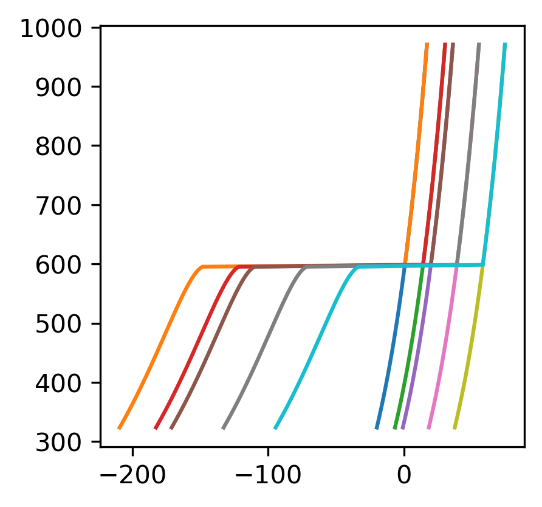

Property Database for Common Substances#
import numpy as np
import matplotlib.pyplot as plt
from chemicals import acentric, critical, heat_capacity
from phasepy import component, mixture, preos
CASRN={'water':'7732-18-5',
'ethanol':'64-17-5'}
Define Critical Properties of Substance#
We can do this using a python database chemicals that looks up the critical properties using the CAS RN. These numbers are available for a large variety of substances
substance='water'
w = acentric.omega(CASRN=CASRN[substance])
Pc=critical.Pc(CASRN=CASRN[substance])##Pa
Tc=critical.Tc(CASRN=CASRN[substance])##K
Equation of State#
eos=preos(component(name=substance, Tc=Tc, Pc=Pc, w=w),'mhv_unifac')
Heat Capacity for Ideal Gas#
if(CASRN[substance] in heat_capacity.Cp_data_Poling['Chemical']):
Cp=heat_capacity.Cp_data_Poling['Cpg'][CASRN[substance]]
##collect temperature dependent coefficients
a_=[]
for i in np.arange(5):
a_.append(heat_capacity.Cp_data_Poling['a%g'%i][CASRN[substance]])
R=8.314##J/mol*K
Set up T-S Property Diagram#
#eos.EnthalpyR?
T_=np.logspace(np.log10(0.5*Tc),np.log10(1.5*Tc),201)
P_=np.asarray([0.1,0.5,1,10,100])*Pc/10**5
SRl_=[]
SRv_=[]
plt.figure(dpi=300,figsize=(3,3))
Tr=600##K
Pr=20##bar
def dH_(T,P):
def Cp_(T):
return
def SR_IG(T,P):
return Cp*np.log(T/Tr)+R*np.log(P/Pr)
for P in P_:
l1=[]
l2=[]
print(P)
for T in T_:
l1.append(eos.EntropyR(T,P,'V')[0]+SR_IG(T,P))
l2.append(eos.EntropyR(T,P,'L')[0]+SR_IG(T,P))
SRv_.append(l1)
SRl_.append(l2)
plt.plot(l1,T_)
plt.plot(l2,T_)
22.064
110.32
220.64
2206.4
22064.0
